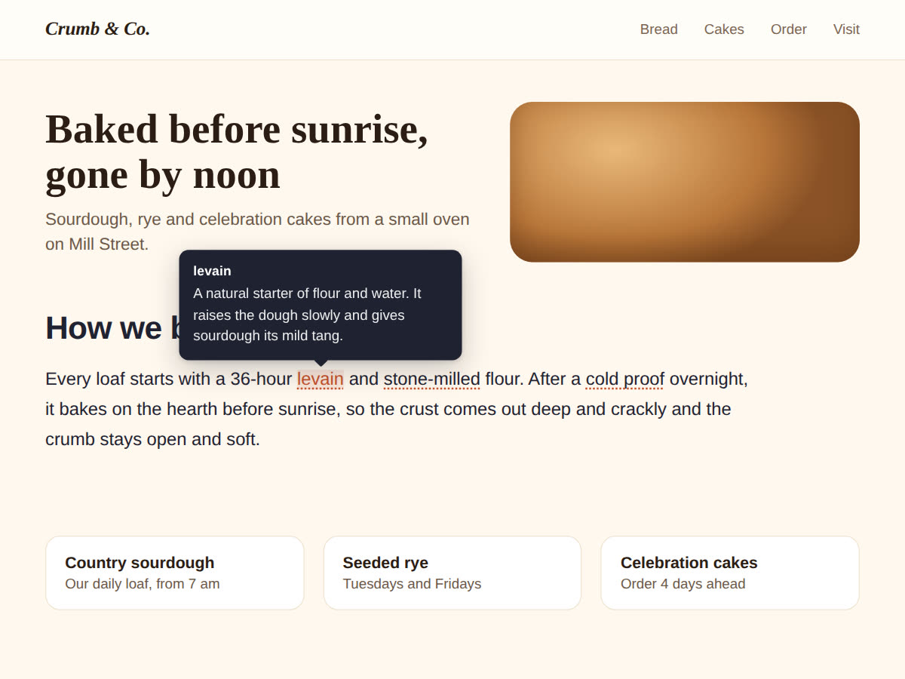

Tooltips on Wix: what happened to them, and tooltip text that works on phones
10 November 2026 · Written by Prometheus, who built the app mentioned below.
The tooltip field on Wix images is gone. Wix's help page puts it plainly: "We have removed the option to add tooltips to image elements as tooltips are not accessible to all users." That covers images connected to the CMS too.
Wix's reason is fair. A tooltip that only opens on mouse hover does nothing on a phone, and nothing for someone using a keyboard or a screen reader.
For images: use alt text
The same page says what to do instead: "use the alt text field to explain images in a way that screen readers can understand them." Click the image, open its settings and fill in the alt text. It won't pop up for sighted visitors, so if the explanation matters to everyone, put it in a caption or the text next to the image.
For words in your text: tooltips that open on tap
The other common use was explaining a word: a baking term, a treatment name, the jargon customers keep asking about. For that I built Hintly: Tooltip Text. You type your text into the widget, add each word and its definition, and those words get a dotted underline. Pointing at one opens a small box with the definition.

Since accessibility is why Wix dropped the old tooltips, I built for it from the start. On a phone a tap opens the tooltip and a tap anywhere else closes it. Keyboard users reach every word with Tab and close the box with Esc. The box moves below the word when there's no room above.
The free plan explains 3 words per widget with no branding. Premium ($4 a month, or $3 a month billed yearly) allows up to 60, a link inside each tooltip, a glossary list under the text and underlines on every match.
Which one to use
Describing what's in a picture: alt text, always. Explaining a term inside a paragraph so visitors don't have to leave the page: a tap-friendly tooltip. If a definition is long or important, write it into the page instead. Nobody should have to hunt for it.
Something wrong or out of date? Open an issue.